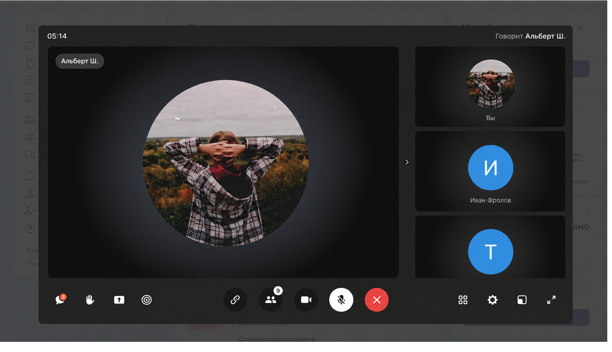

📅 Дата: 25.06.2026
⏰ Время: 14:00 – 15:00 (60 минут)
💻 Платформа: ВК Мессенджер
👥 Аудитория: 10 удаленных сотрудников ООО «Вахруши-Литобувь»

Проведено 5 индивидуальных консультаций для сотрудников ООО «Вахруши-Литобувь»:
Должность: Сборщик обуви 2 швейного участка
Тема: Регистрация и работа с порталом Госуслуги
Дата: 24.06.2026
Результат: Учетная запись создана, сотрудник научился заказывать справки 2-НДФЛ
Должность: Начальник отдела кадров
Тема: Создание и использование электронной почты
Дата: 24.06.2026
Результат: Создан email-ящик, сотрудник научился отправлять письма с вложениями
Должность: Оператор швейного автомата Orisol
Тема: Установка и настройка мессенджера VK Мессенджер
Дата: 24.06.2026
Результат: Установлен VK Мессенджер, создан рабочий чат швейного цеха
Должность: Раскройщик материалов 6 разряда
Тема: Работа с мобильным приложением СберБанк Онлайн
Дата: 25.06.2026
Результат: Настроен онлайн-банкинг, настроены автоплатежи
Должность: Раскройщик материалов 4 разряда
Тема: Кибербезопасность и защита от мошенников
Дата: 25.06.2026
Результат: Сотрудник научился распознавать фишинг и создавать надежные пароли
ℹ️ Примечание: Полные ФИО сотрудников указаны в отчетной документации производственной практики.
📅 Дата: 27.06.2026
⏰ Время: 15:00 – 15:40 (40 минут)
📍 Место: Актовый зал предприятия
👥 Аудитория: 15 сотрудников разного возраста